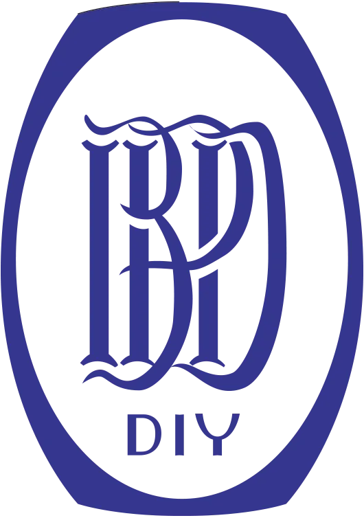
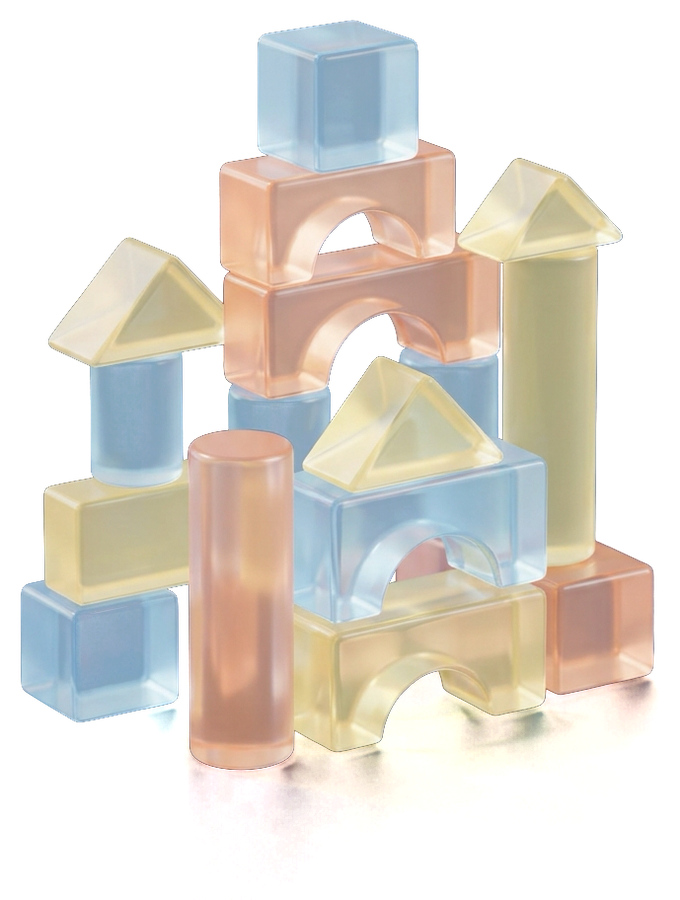
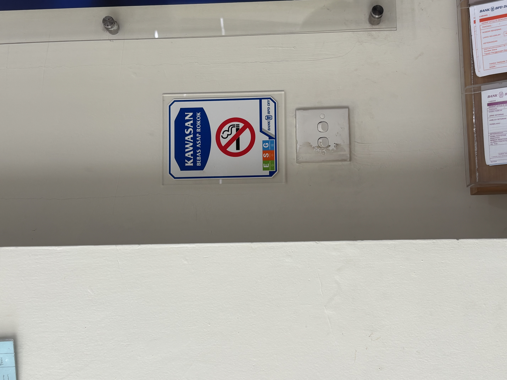
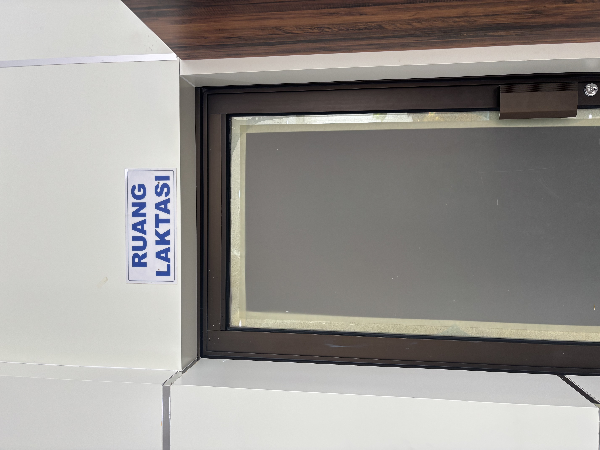
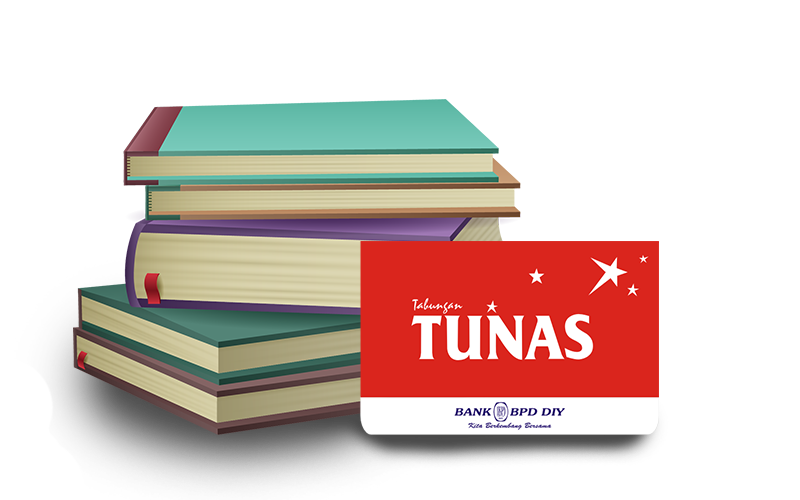
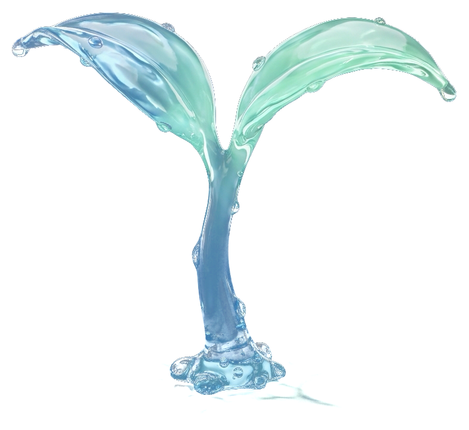
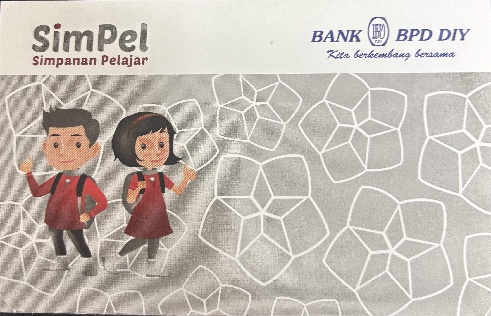

Foto ruang bermain
01
Ruang Bermain Ramah Anak
Mendukung KLA 2024 dengan lingkungan bermain yang aman bagi pertumbuhan dan perkembangan anak.

Cabang BantulMembangun perlindungan anak yang berkualitas, inklusi keuangan, dan masa depan generasi muda Bantul.

Gerakan menabung & perlindungan masa depan.

Satu Rekening Satu Pelajar se-Bantul.
Pelajar terfasilitasi tabungan SimPel gratis.
Setiap anak berhak tumbuh dengan aman, sehat, dan percaya diri.
Bank BPD DIY Cabang Bantul hadir lewat ruang ramah anak, literasi keuangan sejak dini, dan tabungan yang menjaga masa depan mereka.
Profil singkat
Pemimpin Bank BPD DIY Cabang Bantul
Ketua Asosiasi Perusahaan Sahabat Anak Indonesia (APSAI) Kabupaten Bantul
Kontribusi terhadap perlindungan anak melalui Asosiasi Perusahaan Sahabat Anak Indonesia Kabupaten Bantul. Melalui Bank BPD DIY, Fendy Muryawan mampu bersinergi turut serta membangun perlindungan anak yang berkualitas dan terus berkembang.
“Melalui Bank BPD DIY, mampu mewujudkan berbagai gerakan ramah anak dan sebagai pendorong tumbuh dan berkembangnya generasi muda cerdas dan berkarakter serta siap menjadi agen perubahan.”

Fasilitas ramah anak
Mendukung KLA 2024 dengan lingkungan bermain yang aman bagi pertumbuhan dan perkembangan anak.
Peran strategis: kenyamanan nasabah sekaligus penerapan prinsip Kabupaten Layak Anak.

Kawasan Bebas RokokRuang layanan bersih dari asap rokok.

Ruang LaktasiLayak dan higienis untuk hak bayi atas ASI.
Program kontribusi kepedulian anak
Produk keuangan ramah anak

Tabungan Untuk Anak Sekolah, dari TK hingga SMA.
“Mari jadikan gerakan menabung sebagai bagian dari perlindungan anak: menjamin akses pendidikannya, melatih kemandiriannya, dan memastikan setiap tunas bangsa tumbuh dengan rasa aman dan berdaya.”

Dikembangkan OJK bersama perbankan

Simpanan Pelajar, membangkitkan kembali budaya menabung sejak dini.
“Mari bersama Bank BPD DIY dan KPAI, kita jaga dan pupuk setiap tunas bangsa agar tumbuh menjadi generasi yang berdaya, terlindungi, dan berkarakter.”
Bukti realisasi · Kabupaten Bantul
Juli 2025, program “Bupati Menyapa MPLS 2025”: rekening SimPel digratiskan untuk seluruh pelajar baru PAUD, SD, SMP, hingga SMA/SMK se-Kabupaten Bantul.
Angka akumulatif wilayah DIY pada satu periode puncak masa pengenalan sekolah, dengan Bantul sebagai salah satu basis pelajar terbesar setelah Sleman.
Melindungi satu anak hari ini adalah menjaga masa depan satu generasi.
Dari ruang layanan yang ramah hingga literasi di bangku sekolah, Bank BPD DIY Cabang Bantul hadir tumbuh bersama anak-anak Bantul.
Bersinergi mewujudkan Kabupaten Bantul yang Layak Anak, inklusif, dan berdaya saing menuju Indonesia Emas.
Foto atau video belum ditambahkan.